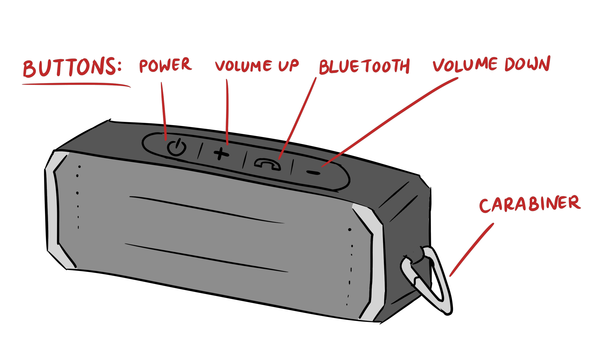
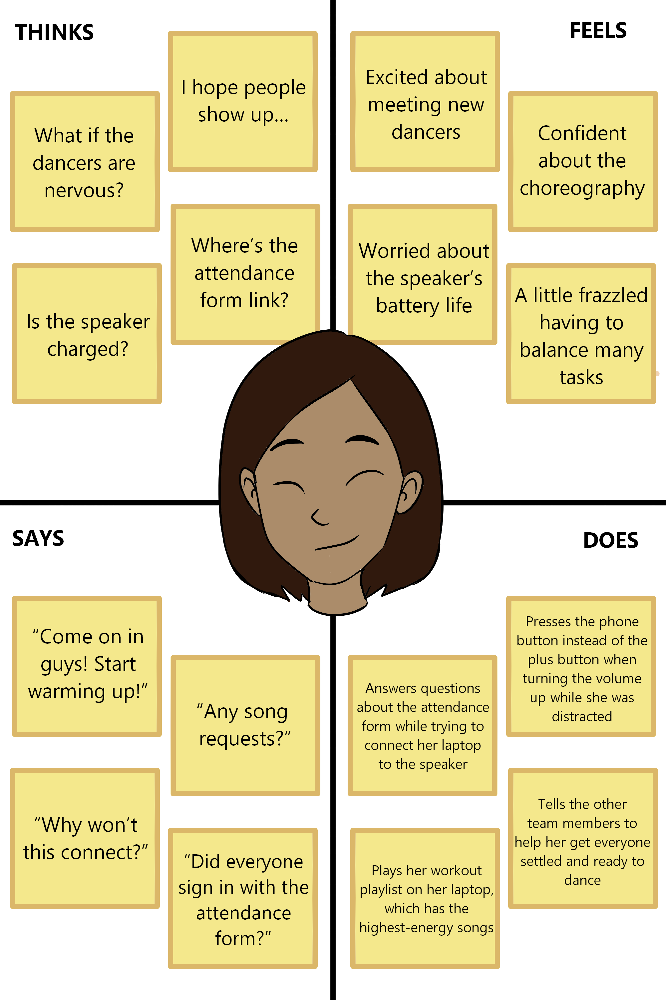
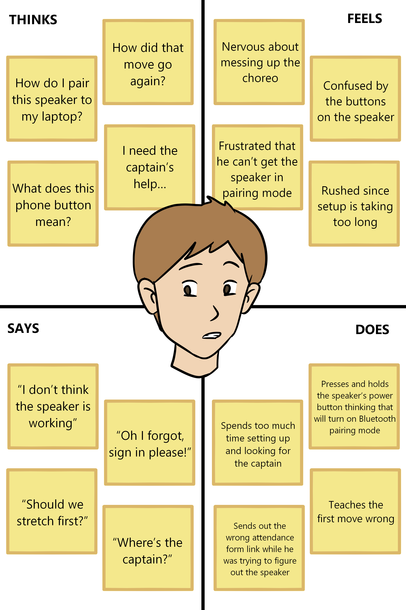
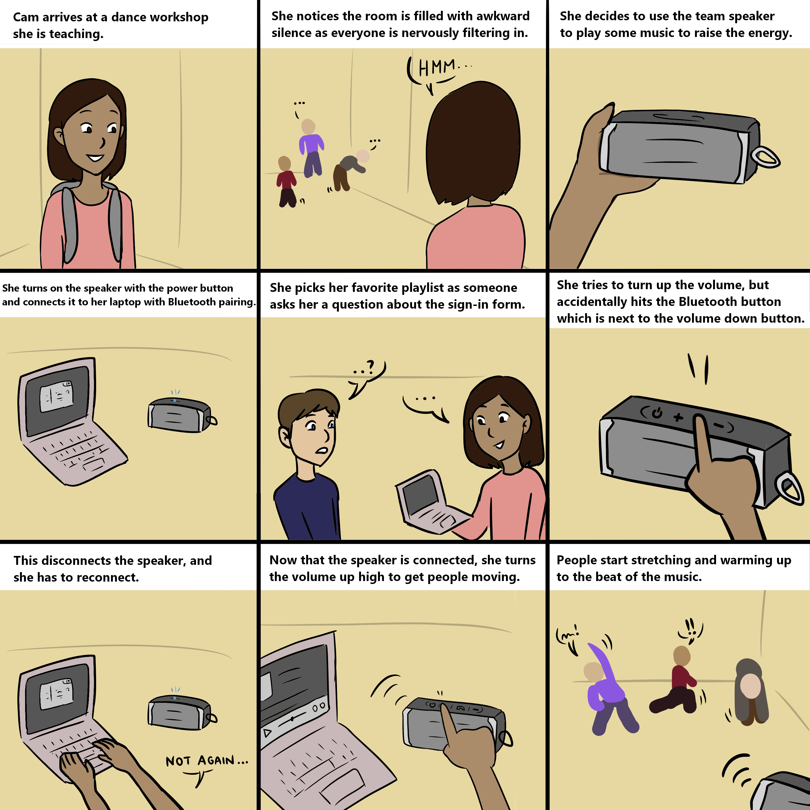

Personas & Storyboarding
Studying a Bluetooth Speaker Interface

This is a speaker used by my dance team during practices and workshops. Its goal is to be a portable and convenient way to project sound from any device with Bluetooth capabilities. It has a carabiner on the side for carrying ease. It also has four buttons on the top for powering on/off, turning the volume up, connecting via Bluetooth, and turning the volume down. You press the power button once to either turn it on or off. To turn on Bluetooth pairing mode, you have to press and hold the button with the phone icon on it. To adjust the volume, you press either the volume up or down button.
Interviews and Takeaways
To gain a better understanding of users' experiences using this speaker's interface, I interviewed three users with the following questions:
- What emotions do you feel while using this speaker?
- How easy or difficult was it for you to figure out how to use this speaker on your first try?
- If someone new were to try to use this speaker, would you feel the need to explain any parts of the interface first? If yes, what?
- If you could improve this interface in any way, would you? How?
The main takeaways from these interviews are summarized in the bullet points below.
- There is initial confusion with connecting the speaker to a device: the Bluetooth button has a phone symbol, which confuses users
- The order of the buttons could be improved by putting the volume up and down buttons next to each other rather than being separated by the Bluetooth button
- The fact that there is only four buttons, one for each of the main functions of the speaker, makes it easy to use after you figure out how to connect it
- It is not clear that you have to press and hold the phone button in order to start the pairing process; some tried to connect by pressing the power button instead
- Most experienced users would explain the connection process to first time users, as it does take some time to figure it out on your own
Personas
Based on the interviews and takeaways, I created two personas to highlight different users' experiences with the interface.
COMPETENT CAM: Cam is a seasoned dancer and captain of the college team. Today she's going to be teaching a workshop for first-time dancers. Though she is familiar with the speaker’s interface, the unintuitive placement of the buttons makes it difficult to use while multitasking. Cam represents users who are used to the interface, but who can still face problems using it.
NEWBIE NICK: Nick just joined the dance team this semester, and is about to teach his first workshop. He has never taught before, and is unconfident in his abilities. He is using the speaker for the first time, while also handling other tasks. Nick represents users who have never used the interface before and the pitfalls such users may encounter.


Storyboard
Now that I had created personas, I imagined a scenario in which COMPETENT CAM would have to interact with the speaker's interface. I took into account her experiences and personality to imagine how the process of interacting with the speaker would play out.
